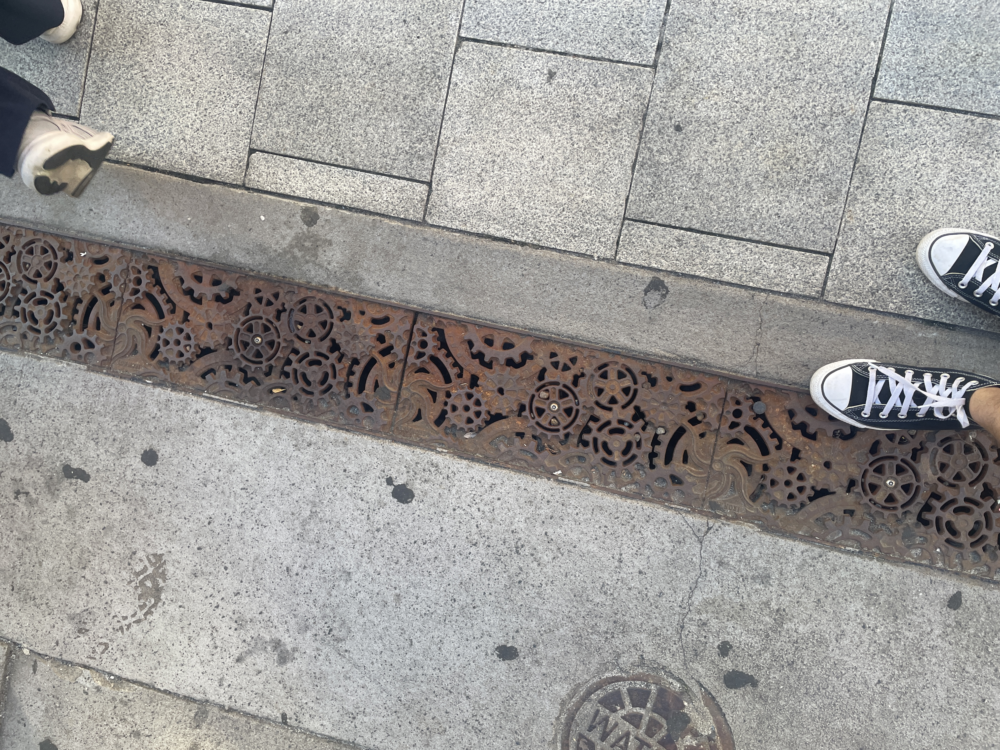
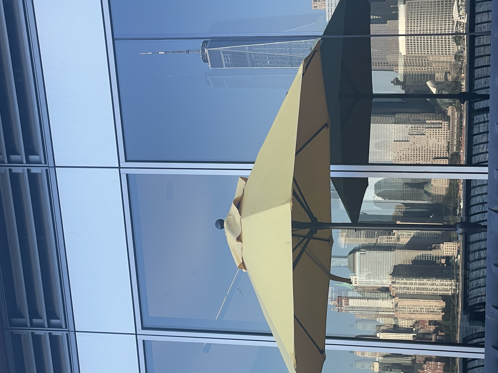
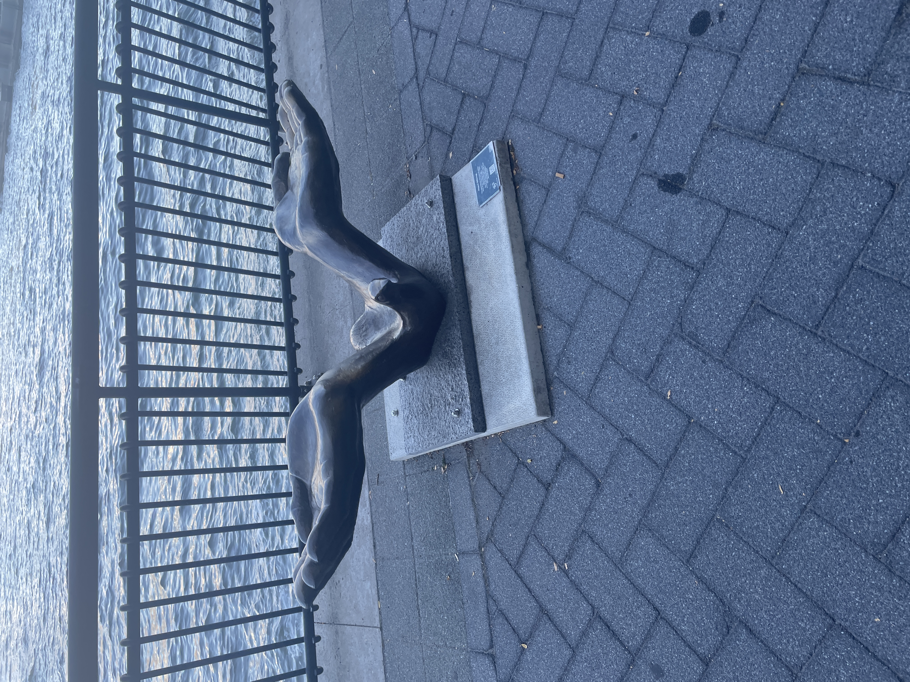
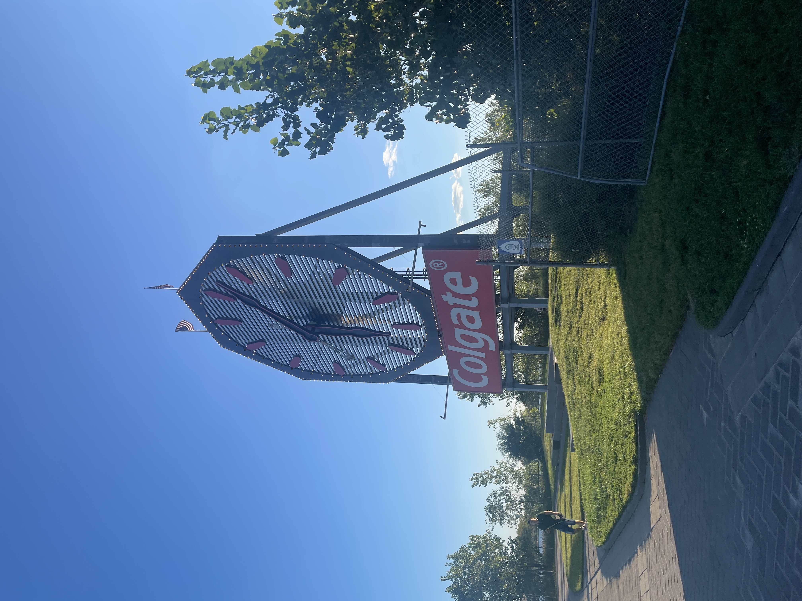
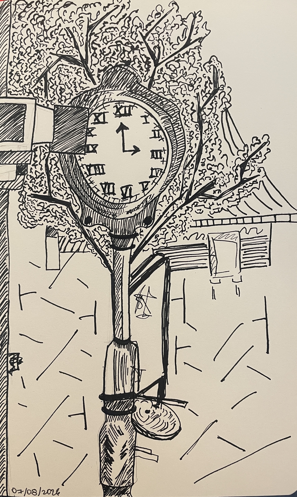
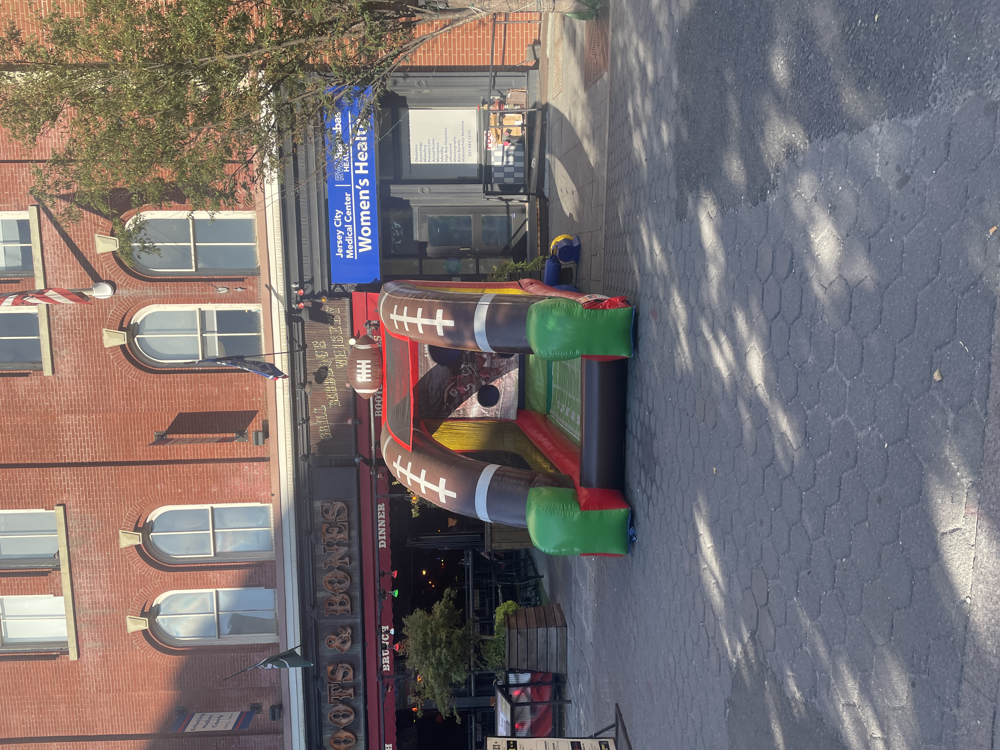
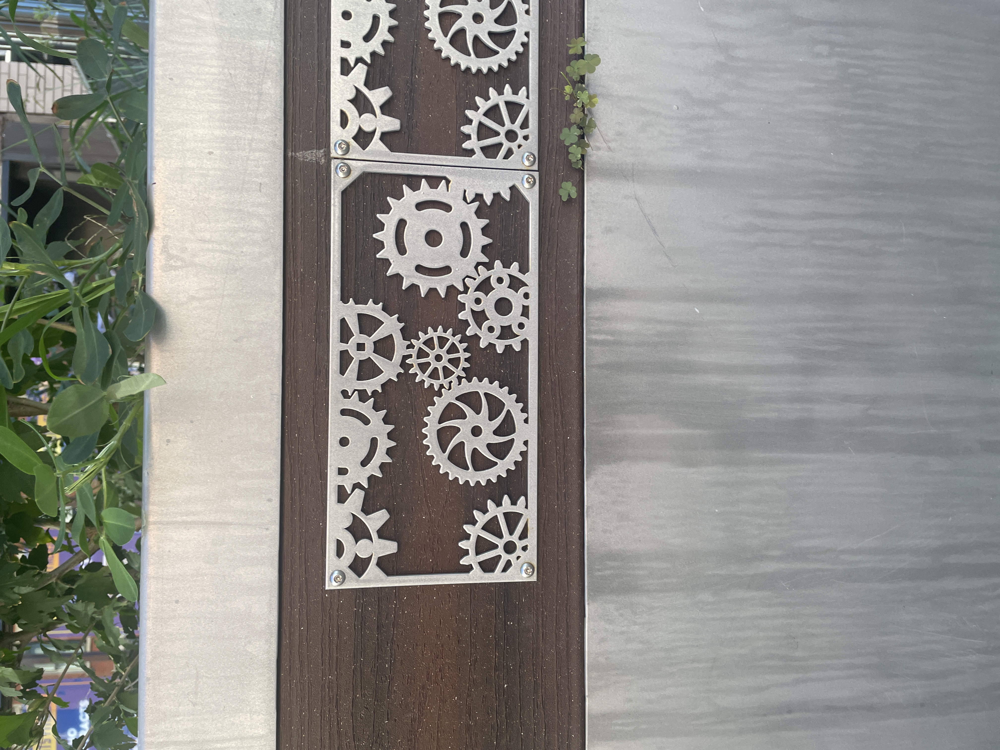
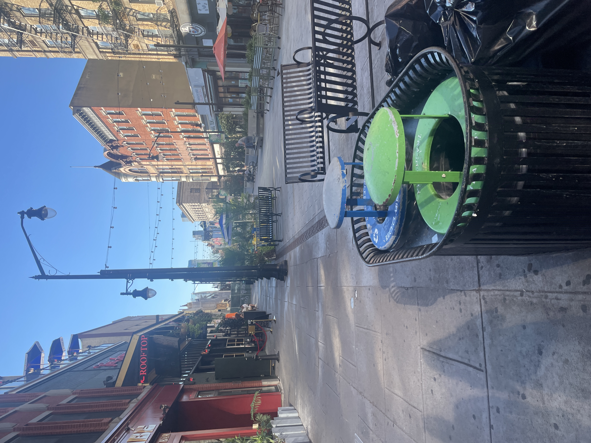
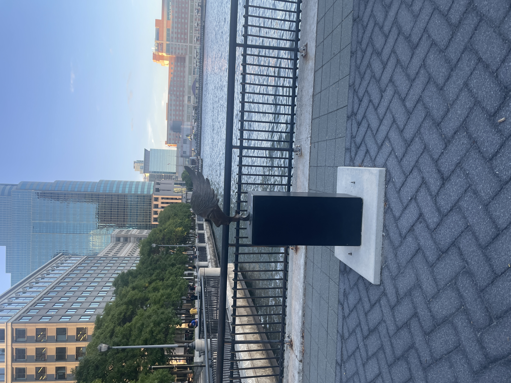
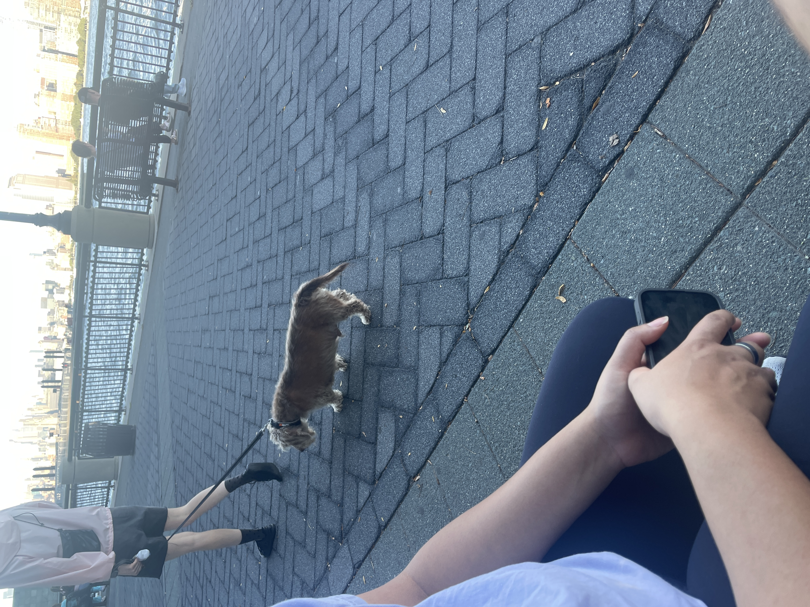

flights. two just seemed, it as many as weren't There
The first thing I heard was the waves.
I walked pretty far, just absorbing the sunlight and enjoying the feeling of walking.



I saw the Colgate Clock, which is apparently an important artifact. It's a lot more intricate when you step up close, and my curiosity was definitely piqued. I learned that:

It was a little funny to see one more clock. I sketched it this time.

I actually paid attention to the water this time, not just the dock. I also saw a few fish, which was pleasant. I'm glad the water is getting cleaner. There were a lot of ferries and speedboats on the water too.
I spent some time just sitting and observing what was around me.



I found the bouncy castle to be a sweet gesture, for children to play on. It was right next to a park as well. The area seems to be very family-oriented, which makes sense looking back on my noticing how many people exit the PATH train at this stop.
I spent some time with my sister, and we walked around in the same area, looking for something to eat. We saw a cute dog, some more sculptures, and started our journey home.


This was a fruitful walk. It was a new, unfamiliar place for me, and I think I would have liked to explore more if I had the time.